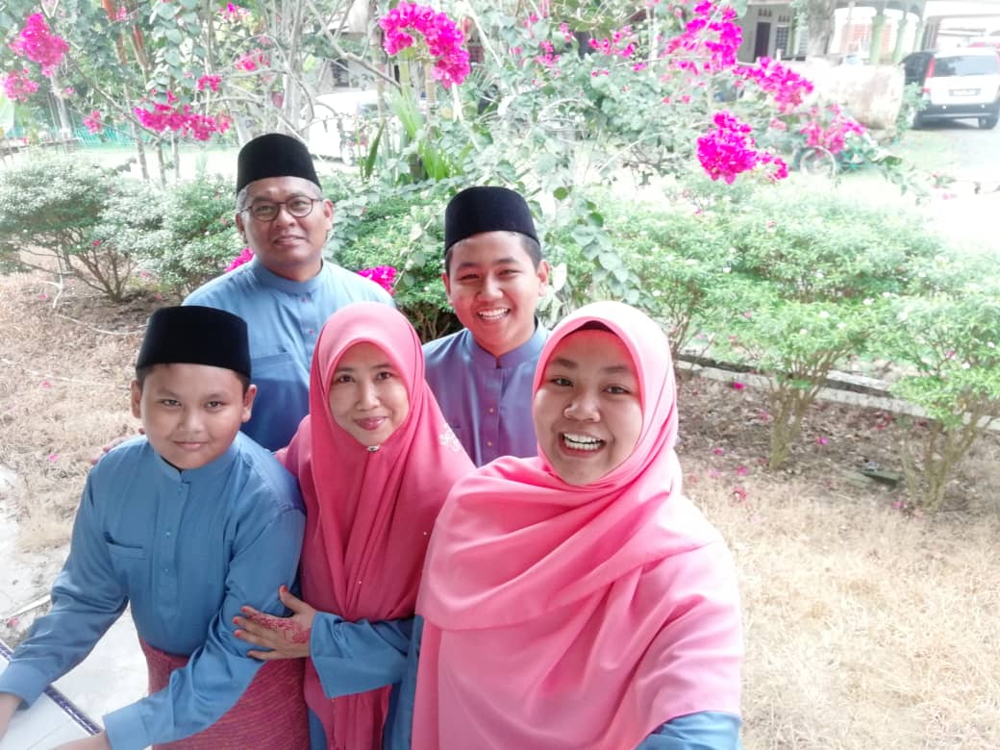
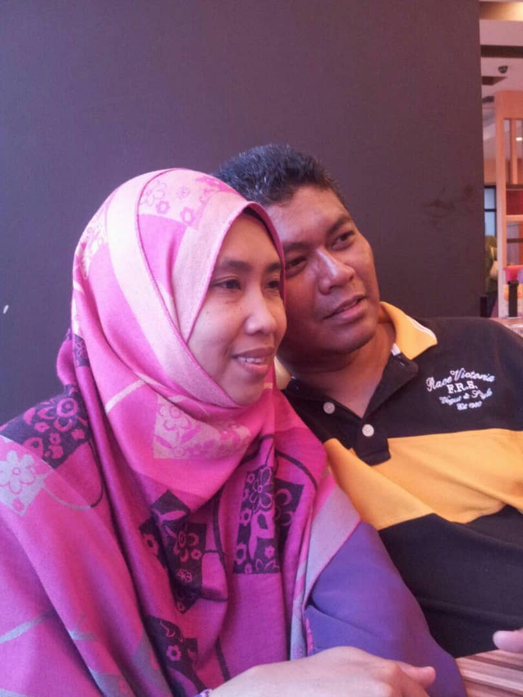
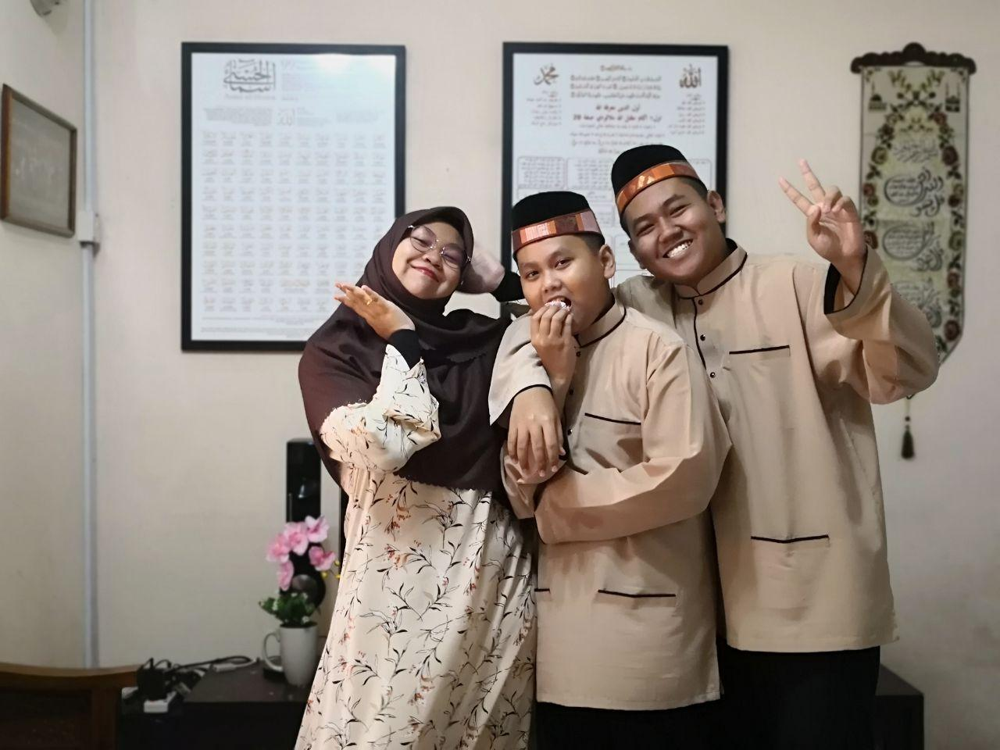

My Family

I come from a family of five. Eventhough our family is small, but I believe that it gives us a bigger space to pour loves to each other every single day. We love travelling together so much! However, we never travel overseas as we used to takes time devouring and enjoying local beauty. With that, I can say confidently that I have been to every state in Malaysia now except for Perlis. Also, we love to roam around Selangor or nearby states just to take some fresh air as we all busy with either works for my parents and studies for my siblings and I. Oh! We have planned to visit Switzerland early in 2020 but unfortunately, the pandemic broke out and the plan was cancelled. Now, it is getting hard to travel around together again for some personal reasons. I just hope everything will be back to normal soon. Another activity that we will do together whenever everyone is home (because I often at hostel and collage), we will watch movies together. When the pandemic suddenly appeared, we started to watch movies at home only, but it still fun and refreshing! The common genre that we will choose is animation as we do not want heavy movies and just want to watch and relaxing. I do think that these habits bring us closer.

This is my parents. My father, Mohd Nazri Bin Mustafa and my mother, Siti Marina Binti Mohd Tohid met during their studies in Liverpool, United Kingdom back in 1997-1998 as they went to the same university but studied different programs. Now, my father works as electronic engineer at MIMOS, suitable with his degree in Electric and Electronic Engineering and master degree from Faculty of Science and Computer (which he took in UITM Shah Alam in 2009). As for my mother, she is currently teaching Biology at KISAS align with the degree in Microbiology she has. For me, I feel proud of them for whatever they do because they are my forever stars.

These two are my younger brothers. From right, his name is Ahmad Muhaimin who is 18 years old this year. Meanwhile, the one in the middle is the youngest, whose name is Ahmad Firas Iqbal, 13 years old. Being one and only daughter and sister, I often see my brothers as naughty and rebellious. But, little did I know that all boys are like that. I have always wanted a big sister or big brother when something overwhelming happens to me so that I can pass the burden to them. But oh well, I am greatful for whatever i have now.